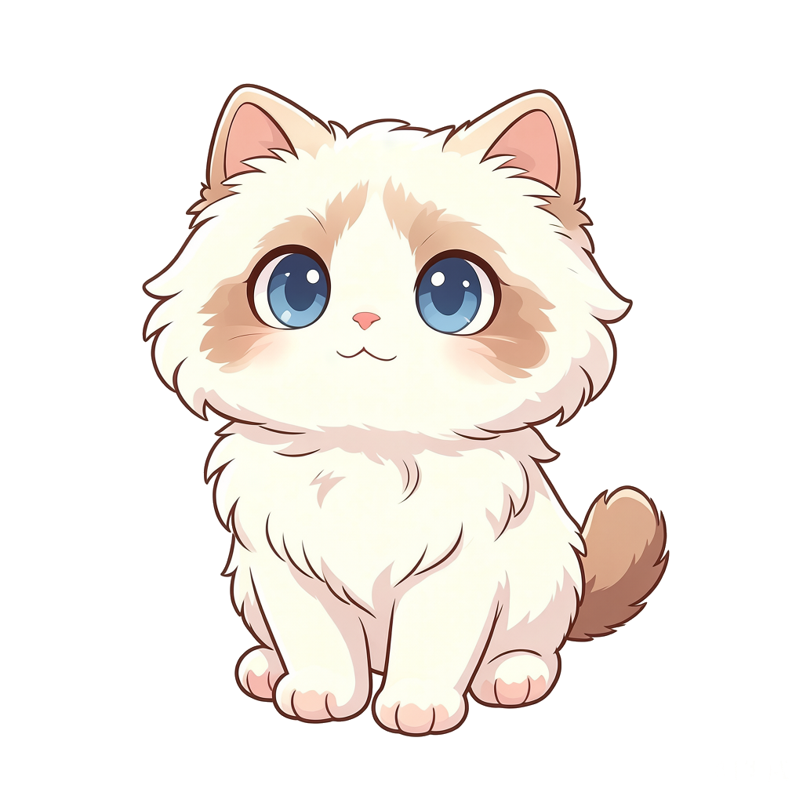

今天也要元气满满地打卡哦！🌟
☀️ 0今日阳光值
0今日打卡
0%整体完成
0连续天数
📚 今日语数英进度
语文
0
数学
0
英语
0
0语文背诵
0数学练习
0英语习题
0运动打卡
0家务打卡
0假期剩余天
0累计阳光
🚀 去哪里玩？
💾 数据备份与恢复
进度保存在本机浏览器。可导出备份文件，换设备或清理缓存后用「导入备份」恢复。
📖 语文专区
背诵 + 生字生词 + 近义反义 + 词意解释 + 阅读理解，点子栏目切换～
➗ 数学专区 · 习题练习
🔤 英语专区
选单元自测：单词记忆（拼写+朗读）/ 英译中 / 听写 / 复习预习（结合教材），自动判对错，每5题 ☀️+1
🎬 视频学习专区
精选免费正版教学视频：语文 / 英语 / 数学。点子栏目切换；点卡片「▶ 播放」即可在本页内置窗口直接观看（B站官方播放器，无广告、无相关推荐、不跳站），不投屏也能看，投屏电视效果更佳。
🔐
视频专区已上锁
先解一道「开根号」数学题才能进入～
🏃 运动 & 🧹 家务打卡
每完成一项运动或家务打卡，自动 ☀️+1 阳光。家长也能在「家长模块」里手动加减阳光。
👨👩👧 家长专区
可扣除或奖励孩子的阳光值，操作仅家长可见（需密码进入）。
当前阳光值：☀️ 0
➖ 扣除阳光
➕ 奖励阳光
🔑 修改密码
🐱 蛋蛋的小猫

幼崽小猫
成长值 0
🛒 阳光兑换超市
用 ☀️ 阳光兑换物资，喂养小猫积攒成长值
👕 我的衣柜
🎒 背包
衣柜里点衣服可穿在小猫身上，背包里点物品可喂养 ❤️